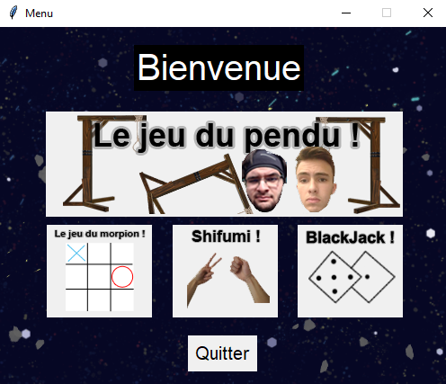
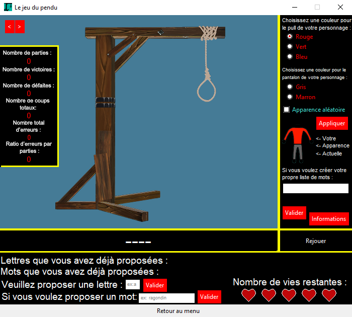

Projet ISN
Le projet
Ce projet est mon projet de spécialité ISN, qui était une épreuve de mon Bac S spécialité ISN. J'ai donc réalisé ce projet en terminale (année scolaire 2018-2019). Ce projet était un projet libre par groupe de 2. J'ai donc fait ce projet avec un amis, et nous avons décider de faire une mini plateforme multi-jeu contenant un jeu du pendu, un jeu du blackjack, un jeu du morpion et un feuille ciseau.
Pour ce projet, nous avons développé en python avec la librairie d'affichage Tkinter. Nous avons également utilisés des logiciels externes afin de faire tous ce qui est visuel, nous avons utilisé photoshop pour tous les visuels et blender pour modéliser le poteau du pendu en 3D avant de le texturer en 2D.
Ce que j'ai réalisé dans ce projet
je me suis personnellement occupé de tout ce qui est graphique, en utilisant notamment photoshop et blender afin de faire les visuels. Je me suis également occupé de programmer le menu et le jeu du pendu, qui était le plus gros jeu de notre plateforme multi-jeux. J'ai également relier tous les programmes afin que l'on puisse naviguer entre chaque application grace aux bouttons de navigation et au menu.
Voici le rendu en images de ce que j'ai réalisé dans le projet:
 Ce que j'ai appris durant ce projet
J'ai appris énormément de choses durant ce projet car c'était mon premier projet informatique. Je n'avais donc que très peu de compétences avant celui-ci. J'ai donc notamment appris plus précisément le langage python qui a été utilisé pour la programmation, j'ai également appris a utiliser la librairie Tkinter (librairie graphique en python) en m'adaptant a toutes les contraintes qu'elles présente. Par exemple, le fait que l'affichage ne soit pas "dynamique" m'a poussé a utiliser certaines petites astuces, notamment le fait que la transparence n'était pas pris en compte par Tkinter m'a forcé a faire des fonds a tous les assets que nous avons rajouté, et de s'assurer qu'ils soient syncronisé a 100% avec le fond. Ce projet, m'a plus généralement appris a travailler avec une librairie, puisque c'était une grande première pour moi et cela m'a été très bénéfique. Globalement, je suis très content d'avoir eu l'occasion de faire ce projet, il n'est pas parfait, le code n'est pas très propre, mais il fonctionne et je suis très fier de ce que j'ai pu produire avec les compétences et connaissances très mince que j'avais lors de ce projet.